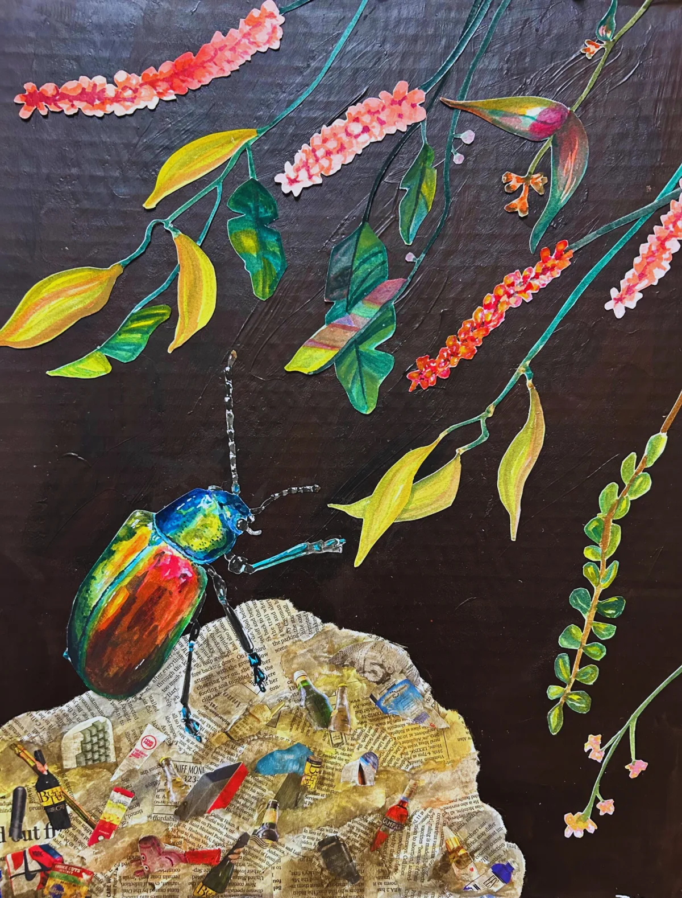
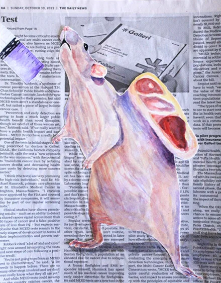
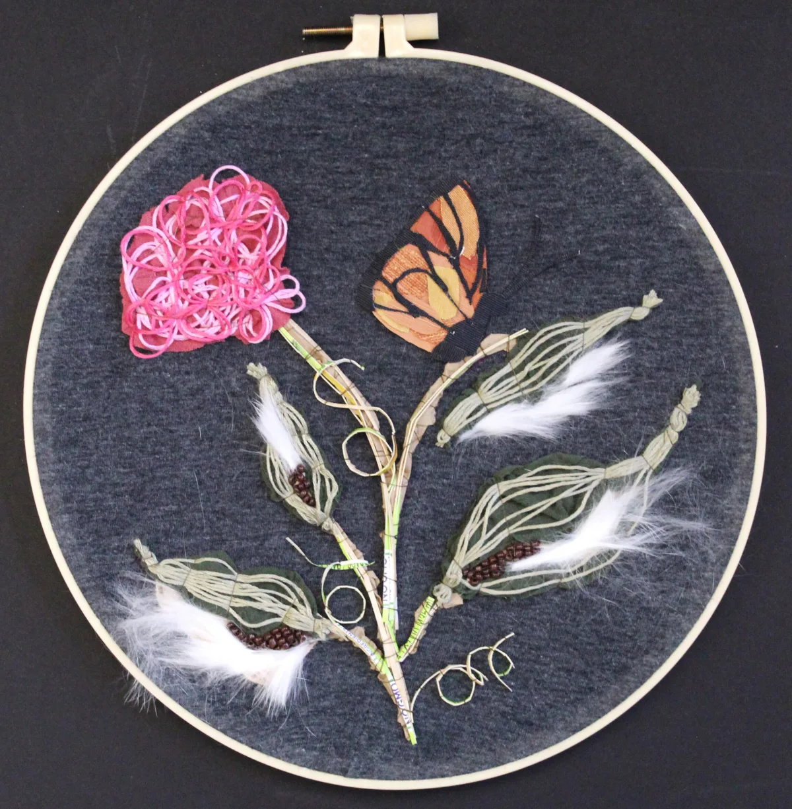
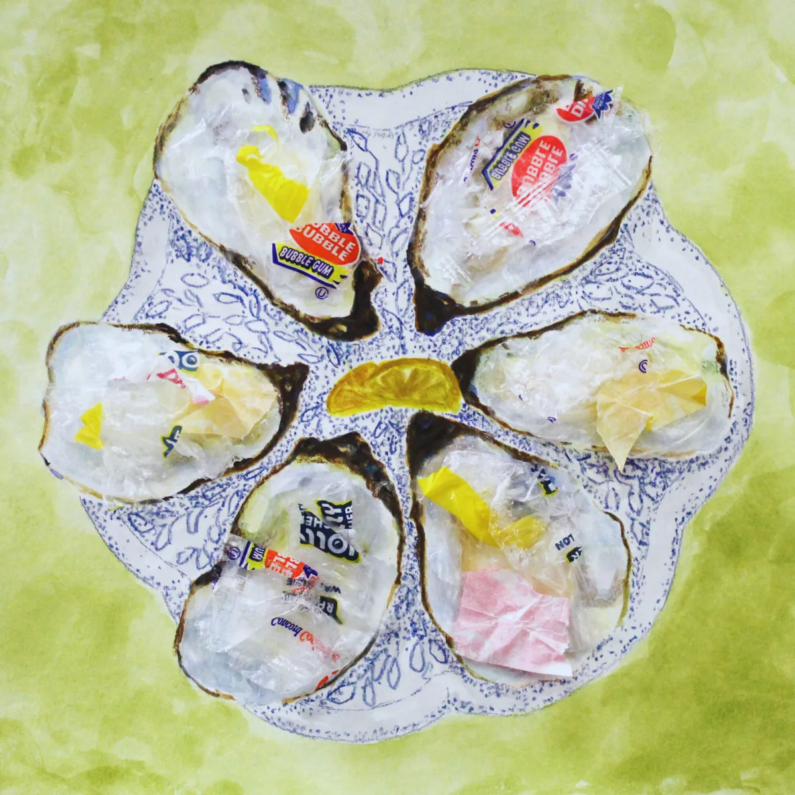
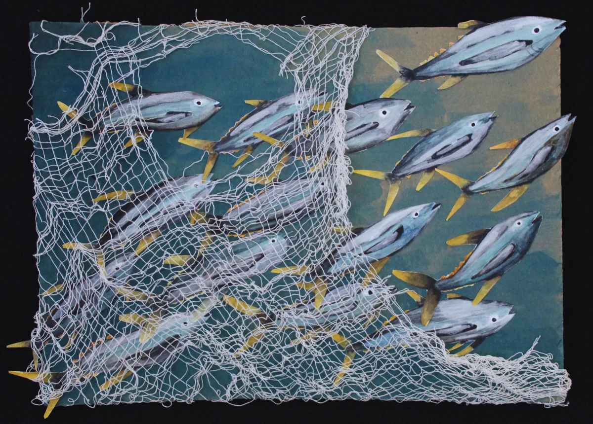
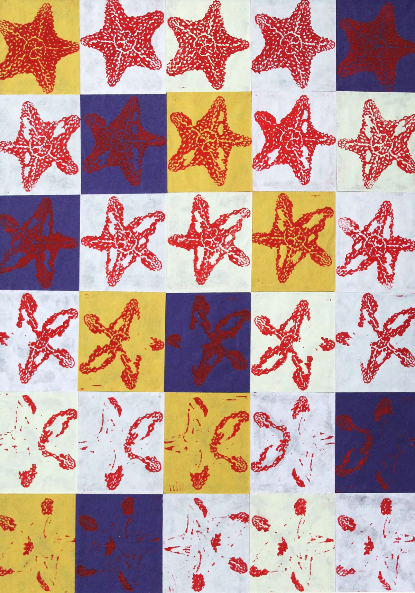
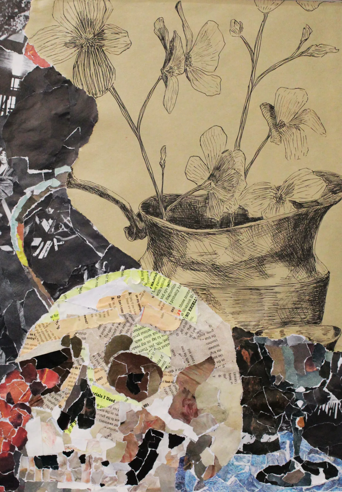

Selected artwork
Material, nature, and environmental storytelling.
Mixed-media work exploring sustainability, biological systems, and the relationship between people and the natural world.

Reaching for RenewalMagazine, newspaper, watercolor, acrylic
Butchered PigCardboard, paper napkins, tape, acrylic

Vacanti “Ear” MouseNewspaper, cardboard, watercolor
Fast Fashion FishScrap fabric, cardboard, glue
Lobster BoilingTinfoil, plastic bag, watercolor, cardboard

Habitat LostRabbit hair, fabric, beads, thread

What Goes Around Comes AroundFound trash, colored pencil, watercolor
Painted Hermit CrabWatercolor, paint marker, colored pencil

Stronger TogetherNetting, cardboard, watercolor

Sea Star Wasting SyndromeLinocut stamp, printing ink

Still LifeMagazine, ink, cardboard
Forced TendernessWatercolor, twine, glue